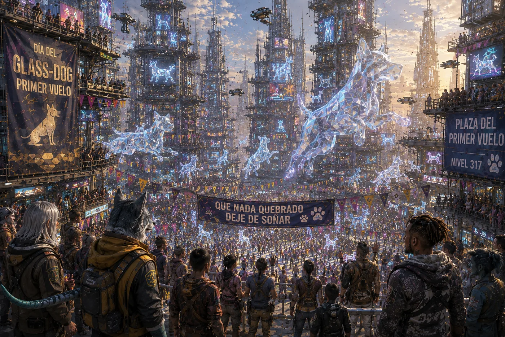
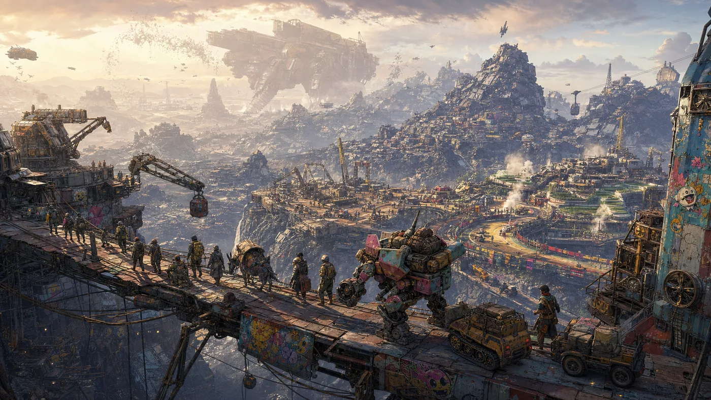
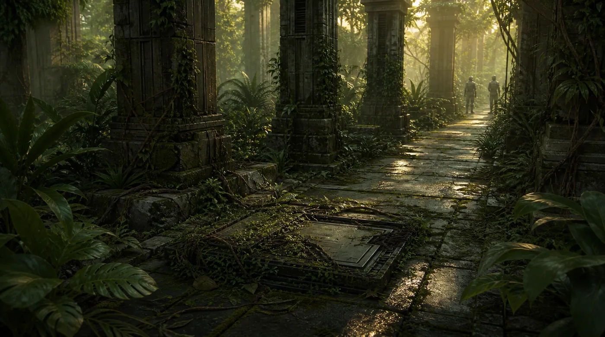
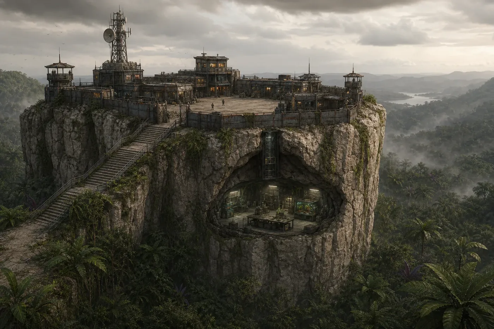

La Senda de los Errantes

Juego de rol d100. Los mundos van incluidos; el billete de vuelta, no.
Empezó en 1991, en una finca junto al Júcar. Nadie avisó de que iba a durar tanto.
Un universo de teselas unidas por portales que funcionan casi siempre. Las corporaciones sobreviven a las civilizaciones; los Errantes, con suerte, al siguiente salto. El sistema no perdona, pero sabe reconocer una buena idea cuando la ve.
El sistema. Todo se resuelve con un d100: rápido, peligroso y abierto a soluciones que nadie había previsto, el narrador incluido. Las heridas pesan, y hay una regla que todo el mundo aprende pronto: el 99 siempre trae problemas.
Los mundos. Cada realidad es una tesela del mismo Mosaico: la ciudad vertical de MadCity, los colosos dormidos de Mundo Chatarra, la selva de Oasis, la jungla de Monstruoplantas, que aprende. Más allá queda lo que nadie ha cartografiado, o nadie ha vuelto para contarlo.
Tu personaje. Ocho razas jugables, de humanos y droideum a nakel, chernos o mujeres y hombres gato. Tu personaje, su equipo, sus implantes y sus decisiones viajan contigo de una tesela a otra. Las decisiones, sobre todo.
La crónica. El Pecio de Seawolf cuenta la Senda como novela por entregas, y sigue escribiéndose en el blog. Se puede leer sin jugar y jugar sin leerla, aunque quien hace las dos cosas suele llevar ventaja.
Mil mundos,un Mosaico.
En el centro, la Urdimbre: lo que cose las teselas y lo que cruzan los Errantes.
Cada tesela, un mundo
El Rosetón del Mosaico, cortado en las piezas que lo forman.
razas jugables
rápido, peligroso y sin red
la primera partida
Ver los mundos
Desde la puerta
Seis teselas del Mosaico


«No era una ciudad. Era un estómago.»
Cuenca Gótica«No son ruinas. Son pruebas.»
Mazmorras de los AntiguosEl portal es inestable
Nadie elige del todo a dónde le lleva. Tira el d100 y descubre dónde apareces.
La Tierra, tesela de origen
Todos los Errantes empiezan en algún sitio. Pulsa el botón y el portal decide el resto.
- 01–20 MadCity · 21–40 Mundo Chatarra · 41–60 Oasis · 61–80 Monstruoplantas · 81–90 Cuenca Gótica · 91–98 Mazmorras · 99 el portal falla · 100 la Tierra
Juega tu primera partida
Reglas rápidas, fichas listas y una aventura jugable en el Kit de Inicio. Los dados los pones tú.